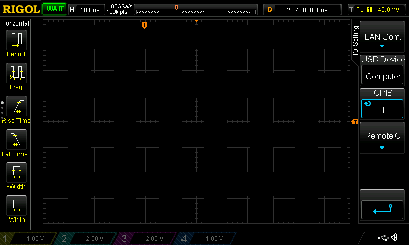

การใช้งานซอฟต์แวร์ PulseView ร่วมกับออสซิลโลสโคป RIGOL DS1054Z#
▷ PulseView#
PulseView เป็นซอฟต์แวร์ที่ทำหน้าที่เป็น Front-end GUI ให้กับซอฟต์แวร์ประเภท Open Source ที่มีชื่อว่า Sigrok สามารถเชื่อมต่อกับอุปกรณ์เครื่องมือวัดและทดสอบ (Measurement & Test Equipment) ได้หลายประเภท เช่น ออสซิลโลสโคปแบบดิจิทัล (Digital Storage Oscilloscope: DSO) และอุปกรณ์บันทึกและวิเคราะห์สัญญาณดิจิทัล (Logic Analyzer: LA) ผ่านทางพอร์ต USB หรือ LAN/LXI (TCP/IP) เช่น ออสซิลโลโคปของบริษัท Rigol รุ่น DS1054Z, DS1074Z, DS1104Z, DS2000 เป็นต้น
PulseView สามารถนำมาใช้ในการวิเคราะห์รูปแบบการสื่อสารข้อมูลแบบต่าง ๆ เนื่องจากมีส่วนเสริมที่เรียกว่า Protocol Decoders (PDs) เช่น การสื่อสารข้อมูลแบบ UART, I2C, SPI, I2S, CAN, Modbus, JTAG เป็นต้น
PulseView มีให้เลือกใช้สำหรับ Windows, Linux, Mac OS X และสามารถดาวน์โหลดมาใช้งานได้ฟรีจากเว็บไซต์ https://sigrok.org/wiki/Downloads
▷ การใช้งาน PulseView ร่วมกับ RIGOL DS1054Z: USB Connection#
ถัดไปเป็นการทดลองใช้งานซอฟต์แวร์ PulseView และใช้วิธีการเชื่อมต่อกับออสซิลโลสโคป RIGOL DS1054Z ด้วยสาย USB
ข้อสังเกต: ผู้ใช้ PulseView - Windows Version จะต้องใช้โปรแกรมอย่างเช่น Zadig หรือ SysProgs USB Driver Tool เปลี่ยน USB Driver สำหรับอุปกรณ์ดังกล่าวให้เป็น WinUSB จึงจะใช้งานร่วมกับซอฟต์แวร์ PulseView ได้

รูป: การใช้โปรแกรม USB Driver Tool เพื่อเลือกใช้ WinUSB Driver เมื่อได้เสียบสาย USB เชื่อมต่อ RIGOL DS1054Z กับเครื่องคอมพิวเตอร์ของผู้ใช้
ขั้นตอนการใช้งาน
- เปิดใช้งาน PulseView แต่ยังไม่ได้เชื่อมต่อกับอุปกรณ์
- เลือกอุปกรณ์ Rigol DS และพอร์ต USB แล้วกดปุ่มสแกนหาอุปกรณ์ "Scan for devices using driver above"
- เลือกอุปกรณ์ที่ได้ค้นพบเพื่อใช้งาน (จะปรากฎชื่อสำหรับ RIGOL DS1054Z)
- กดปุ่ม Configure Channels เพื่อเลือกเปิดหรือปิดช่องสัญญาณอินพุต (CH1 .. CH4) และตั้งค่าการใช้งานเช่น Volt/Div
- ตั้งค่าการใช้งาน
- Frame limit ตั้งค่าให้เป็น 1 หรือเป็นจำนวนจำกัด (ไม่ตั้งค่าแบบ No limit)
- Data source ตั้งค่าให้เป็น Live
- Time base ตั้งค่า Time/Div เลือกค่าได้จากเมนูแบบ Dropdown
- Trigger source เลือกให้เป็น CH1 หรือหมายเลขช่องอื่นที่มีสัญญาณอินพุต
- Trigger slope เลือกให้เป็น 'r' (Rising Edge) หรือ 'f' (Falling Edge)
รูป: เปิดใช้งาน PulseView แต่ยังไม่ได้เชื่อมต่อกับอุปกรณ์
รูป: การเลือกอุปกรณ์ Rigol DS
รูป: เลือกอุปกรณ์ Rigol DS เลือกพอร์ต USB และสแกนหาอุปกรณ์ตามลำดับ
รูป: ตัวอย่างการเลือกอุปกรณ์ "Rigol DS1054Z with 4 channels" จากรายการที่ปรากฏ
รูป: ตัวอย่างการเปิดใช้งานช่องอินพุต 2 ช่องแรก (CH1 และ CH2) ของอุปกรณ์ Rigol DS1054Z จากทั้งหมด 4 ช่อง
รูป: การตั้งค่าเพื่อใช้งาน Rigol DS เช่น การตั้งค่า Trigger หรือเงื่อนไขการเริ่มต้นบันทึกสัญญาณ
รูป: การเปิดใช้งานและตั้งค่าสำหรับช่องสัญญาณ CH1 และ CH2 เช่น ตัวคูณของสายโพรบ (Probe Factor) การเลือก Input Coupling เป็น DC หรือ AC และตั้งค่า Volt/Div
รูป: ตัวอย่างรูปสัญญาณทดสอบ (Rectangular Waveform, 1kHz) เหมือนกัน 2 ช่อง ที่ได้จาก RIGOL DS1054Z
รูป: การใช้เคอร์เซอร์แนวตั้งเพื่อวัดคาบของสัญญาณทดสอบ (ได้คาบเท่ากับ 1msec และความถี่ 1kHz)
รูป: คลื่นสัญญาณที่ปรากฏบนหน้าจอแสดงผลของออสซิลโลสโคป
รูป: ตัวอย่างการวัดสัญญาณไซน์ (50Hz, 5Vpp) จำนวน 2 ช่อง ต่างเฟสกัน 90 องศา
รูป: คลื่นสัญญาณไซน์ที่ปรากฏบนหน้าจอแสดงผลของออสซิลโลสโคป
รูป: ตัวอย่างการใช้ฟังก์ชัน MATH และได้รูปคลื่นสัญญาณผลลัพธ์ เช่น ได้จากการนำสัญญาณทั้งสองช่องมาบวกกันแล้วหารด้วยสอง "(CH1+CH2)/2"
▷ การใช้งาน PulseView ร่วมกับ RIGOL DS1054Z: LAN Connection#
สำหรับการใช้งาน DS1054Z ในเครือข่าย LAN แนะนำให้เชื่อมต่อใช้งานผ่านอุปกรณ์เครือข่ายและมีการเปิดใช้งาน DHCP Server ไว้แล้ว
ในกรณีที่ใช้คอมพิวเตอร์ Windows 10 หรือ Windows 11 และเชื่อมต่ออินเทอร์เน็ตผ่าน WiFi เช่น เชื่อมต่อกับ WiFi Router หรือ WiFi HotSpot ของสมาร์ทโฟน และคอมพิวเตอร์ของผู้ใช้มีพอร์ต RJ45 ว่างอยู่ ก็สามารถใช้สาย LAN เชื่อมต่อโดยตรงกับออสซิลโลสโคปได้
แนะนำให้ตั้งค่า WiFi ให้สามารถแชร์การใช้งาน Internet Connectivity ของเครื่องผู้ใช้ ให้กับอุปกรณ์ (ออสซิลโลสโคป) ที่กำลังเชื่อมต่อกับพอร์ต Ethernet/RJ45 (Sharing Internet from WiFi to Ethernet in Windows 10 / 11)
การตั้งค่าใช้งานสำหรับระบบ LAN/Ethernet ให้กับออสซิลโลสโคป เริ่มต้นด้วยการกดปุ่ม Utility แล้วเลือก IO Setting จากแถบเมนูด้านขวาบนจอภาพของออสซิลโลสโคป

รูป: เลือกจากเมนู IO Setting
เลือก LAN Conf. เพื่อตั้งค่าการใช้งาน LAN ผ่านพอร์ต RJ45 (ให้เสียบสาย LAN ระหว่างออสซิลโลสโคปกับคอมพิวเตอร์ของเครื่องผู้ใช้)

รูป: เลือกจากเมนู LAN Conf.
รูป: กดปุ่มเลือก Configure และเลือก DHCP เพื่อให้ออสซิลโลสโคปทำการเชื่อมต่อกับ DHCP Server ในเครือข่าย
กดปุ่ม Configure แล้วตั้งค่าเป็น DHCP แล้วกดปุ่ม Apply เพื่อให้ออสซิลโลสโคป เชื่อมต่อกับระบบเครือข่ายซึ่งจะต้องมีอุปกรณ์ที่ทำหน้าที่เป็น DHCP Server เมื่อเชื่อมต่อได้สำเร็จแล้ว จะได้หมายเลข IP (IPv4) และการตั้งค่าโดยอัตโนมัติจาก DHCP Server สำหรับ Subnet, Gateway IP และ DNS Server ตามลำดับ จากนั้นกดปุ่ม Enter เพื่อย้อนกลับไปยังเมนูก่อนหน้า
ขั้นตอนถัดไปให้เปิดใช้งาน PulseView และเลือกอุปกรณ์เพื่อเชื่อมต่อและใช้งาน โดยเลือกจากรายการอุปกรณ์ ให้เป็น Rigol DS (rigol-ds)
รูปแบบการเชื่อมต่อกับอุปกรณ์คือ TCP/IP (Raw TCP) และจะต้องตั้งค่าหมายเลข IP ให้ตรงกับออสซิลโสโคปที่มีการตั้งค่าเครือข่ายไว้แล้ว และหมายเลขพอร์ต 5555 (default) จากนั้นให้กดปุ่ม "Scan for device using driver above"
รูป: การตั้งค่าเพื่อเชื่อมต่อกับออสซิลโลสโคปในเครือข่ายด้วยโพรโทตอล TCP/IP (พอร์ตหมายเลข 5555)
รูป: แสดงรายการอุปกรณ์ Rigol DS (rigol-ds) ที่ตรวจพบในเครือข่าย
▷ ตัวอย่างการวัดสัญญาณ Tx/Rx ของ Serial/UART#
ตัวอย่างถัดไปสาธิตการวัดสัญญาณที่ขา Tx/Rx ของบอร์ดไมโครคอนโทรลเลอร์ Arduino Nano และใช้ตัวอย่างโค้ด Arduino Sketch ต่อไปนี้ เพื่อทำหน้าที่คอยรับข้อมูลไบต์และส่งกลับไปยังคอมพิวเตอร์ของผู้ใช้ในลักษณะ Serial Loopback
void setup() {
Serial.begin(9600);
}
void loop() {
// Check if the next data byte is received
while (Serial.available() > 0) {
uint8_t c = Serial.read(); // Read data byte from Serial
Serial.write(c); // Write it back to Serial
}
}
รูป: ตัวอย่างการใช้ Arduino Serial Monitor เพื่อส่งข้อความ "Hello"
ด้วยอัตรา Baud=9600
รูป: ตัวอย่างสัญญาณที่ขา Rx และ Tx ของไมโครคอนโทรลเลอร์ ซึ่งได้กำหนดให้เป็นสัญญาณช่อง CH1 และ CH2 ตามลำดับ
ถ้าจะวิเคราะห์สัญญาณดิจิทัลที่วัดได้จากออสซิลโลสโคป จะต้องแปลงให้เป็นข้อมูลในแต่ละช่อง ให้เป็นสัญญาณแบบดิจิทัลก่อน เช่น กำหนดระดับเส้นแบ่งแรงดันไฟฟ้า (Threashold) กึ่งกลาง หรือ จะเลือกใช้การแบ่งด้วย Schmitt-Trigger (Signal Average +/-15%)
รูป: ตัวอย่างการแปลงข้อมูลอินพุต CH1 ให้เป็นสัญญาณดิจิทัล
รูป: ตัวอย่างการแปลงข้อมูลอินพุต CH2 ให้เป็นสัญญาณดิจิทัล
เมื่อแปลงเป็นข้อมูลดิจิทัลแล้ว ถัดไปให้เปิดใช้งาน Protocol Decoder (PDs) สำหรับ UART
รูป: เลือก Protocol Decoder ให้เป็น UART
รูป: ตัวอย่างการตั้งค่า Data Source, Time base และ Trigger
รูป: ตัวอย่างการตั้งค่า UART เช่น ค่า Baudrate ต้องให้ตรงกับที่ใช้งานจริง การเลือกช่องสัญญาณอินพุตสำหรับ UART RX/TX ตามลำดับ
รูป: ตัวอย่างคลื่นสัญญาณที่ได้และข้อมูลที่ถูกแปลงโดย UART Decoder หลังจากกดปุ่ม Run
รูป: ตัวอย่างสัญญาณจริงบนหน้าจอแสดงผลของออสซิลโลสโคป
▷ ตัวอย่างการวัดสัญญาณ SCL/SDA ของบัส I2C#
อีกตัวอย่างหนึ่งเป็นการวัดสัญญาณของบัส I2C
โดยใช้บอร์ดไมโครคอนโทรลเลอร์ Arduino Nano
นำมาเขียนโปรแกรมเพื่อให้อ่านค่าจากโมดูลเซนเซอร์แสง BH1750
(แอดเดรสของอุปกรณ์คือ 0x23) และใช้วิธีเชื่อมต่อด้วยบัส I2C
ที่ขา A4/A5 สำหรับสัญญาณ SDA / SCL ของบัส I2C
(ตั้งค่าความเร็วในการสื่อสารข้อมูลเท่ากับ 400kHz)
และมีการเปิดใช้งาน I2C Protocol Decoder เพื่อวิเคราะห์ข้อมูลที่ได้นำเข้าจากออสซิลโลสโคป
ตัวอย่างโค้ดสำหรับการสาธิต
#include <Wire.h>
// Note: For arduino Uno or Nano, use A4/A5 pins for SDA/SCL.
// Set the I2C address for the BH1750 device
#define BH1750_ADDR (0x23) // 0x23 or 0x5c
void setup() {
Serial.begin( 115200 ); // Set Serial baudrate
Wire.begin();
Wire.setClock( 400000 ); // Set I2C speed
delay(100);
}
void loop() {
float lux;
// Read a value fro the BH1750 sensor module
if ( BH1750_read(BH1750_ADDR, &lux) ) {
Serial.print( lux, 1 );
Serial.println( " [lx]" );
} else {
Serial.println( "Sensor reading error!" );
}
delay(2000);
}
char sbuf[32]; // String buffer used for sprintf()
bool BH1750_read( uint8_t addr, float *lux ) {
uint8_t buf[2];
*lux = 0.0;
// Send the addr/write byte
// One-shot, Hi-Resolution Mode (1 Lux Resolution)
Wire.beginTransmission( addr );
// Send the instruction to start measurement
Wire.write( 0x20 );
if( Wire.endTransmission() > 0 ) {
Serial.println( "No response from the device!" );
return false;
}
delay(150); // wait at least 120 msec.
Wire.requestFrom( addr, 2, true );
if ( Wire.available() == 2 ) {
buf[0] = Wire.read();
buf[1] = Wire.read();
} else {
return false;
}
uint32_t value = buf[0];
value = (value << 8) | buf[1];
// Convert raw data to Lux
value /= 1.2f;
*lux = value;
sprintf(sbuf,"0x%02x, 0x%02X, 0x%02X (hex)",
addr, buf[0], buf[1] );
Serial.println(sbuf);
return true;
}
รูป: ตัวอย่างโค้ดและข้อความที่ได้รับผ่านทาง Arduino Serial Monitor
รูป: การเปิดใช้งาน Protocol Decoder สำหรับ I2C
รูป: การแปลงสัญญาณที่วัดได้ให้เป็นสัญญาณแบบดิจิทัล (ใช้วิธีการแปลงแบบ Schmitt-Trigger)
รูป: ตัวอย่างการแปลงสัญญาณ SCL / SDA ให้เป็นลำดับข้อมูลไบต์ตามรูปแบบของบัส I2C

รูป: ตัวอย่างลำดับข้อมูลไบต์ที่ได้ในช่วงที่มีการอ่านค่าจากโมดูล BH1750 (I2C)
▷ ตัวอย่างการวัดสัญญาณแอนะล็อกจากวงจร RLC#
วงจร RLC ที่มีตัวต้านทาน (R) ตัวเก็บประจุ (C) และตัวเหนี่ยวนำไฟฟ้า (L) ต่ออนุกรมกันในวงจร สามารถนำมาใช้ในการฝึกต่อวงจร และใช้เครื่องออสซิลโลสโคปเพื่อวัดสัญญาณไฟฟ้าจากวงจรดังกล่าว
วงจร RLC ที่จะนำมาใช้สำหรับการทดสอบนั้น (ดูผังวงจรตัวอย่าง) ทำงานให้โหมดที่เรียกว่า Source RLC (Series) แต่มีเงื่อนไขเริ่มต้นไม่เป็นศูนย์ (Non-zero Initial Condition) เช่น ในช่วงเริ่มต้นให้ตัวเก็บประจุไฟฟ้ามีแรงดันตกคร่อมไม่เป็นศูนย์ หรือ มีกระแสไฟฟ้าไหลผ่านตัวเหนี่ยวนำที่ไม่เป็นศูนย์ เป็นต้น
รูป: ผังวงจรตัวอย่างสำหรับการทดสอบ
เริ่มต้นให้สวิตช์ SW อยู่ในตำแหน่งทางซ้ายมือ และจะทำให้มีกระแสไฟฟ้าไหลจากแหล่งจ่าย VS ผ่านตัวต้านทาน RS ไปยังตัวเก็บประจุไฟฟ้า C จนระดับแรงดันไฟฟ้าตกคร่อมที่ ตัวเก็บประจุมีเท่ากับ VS และไม่มีกระแสไฟฟ้าไหลอีกต่อไป
หลังจากช่วงการอัดประจุไฟฟ้า ให้เลื่อนสวิตช์ SW จากตำแหน่งทางซ้ายไปทางขวามือโดยทันที จะทำให้ได้วงจรใหม่ที่ประกอบด้วย R, L, C แต่ไม่มีแหล่งจ่ายไฟฟ้า DC (Source-free) ตัวเก็บประจุไฟฟ้ามีแรงดันตกคร่อมเริ่มต้นมากกว่า 0V แต่ตัวเหนี่ยวนำไฟฟ้ายังไม่มีกระแสไหลผ่านก่อนการเปลี่ยนตำแหน่งของสวิตช์ SW
ให้ใช้ออสซิลโลสโคปวัดสัญญาณ เช่น วัดแรงดันตกคร่อมที่ตัวเก็บประจุเมื่อมีการเปลี่ยนตำแหน่งสวิตช์ จากซ้ายไปขวา รูปคลื่นสัญญาณไฟฟ้าที่ได้จะมีลักษณะเหมือนฟังก์ชันไซน์แต่มีแอมพลิจูดลดลงเมื่อเวลาผ่านไป (Damped Sinusoidal Waveform)
ถัดไปเป็นตัวอย่างการทดลองวัดสัญญาณจากวงจร RLC ที่ได้ต่อวงจรบนเบรดบอร์ด เลือกค่าดังนี้
- VS=5V แรงดันไฟฟ้าคงที่จากแหล่งจ่าย DC
- RS=20Ω ตัวต้านทานจำกัดกระแสในช่วงการชาร์จประจุ
- C=39nF (+/-10%) ตัวเก็บประจุ (เลือกใช้คาปาซิเตอร์แบบ Mylar)
- L=100uH (+/-10%) ตัวเหนี่ยวนำหรือคอยล์
- R=1Ω ใช้ค่าความต้านทานภายในของคอยล์ (ใช้มัลติมิเตอร์ดิจิทัลวัดค่าความต้านทาน)
รูป: การวัดสัญญาณไฟฟ้าด้วยออสซิลโลสโคป
รูป: การวัดความกว้างหรือคาบของสัญญาณไฟฟ้า (ใช้เคอร์เซอร์แนวตั้ง วัดระยะเวลาได้ 12.30 usec)
รูป: การแสดงรูปสัญญาณด้วย PulseView และวัดความกว้างของหนึ่งคาบ (วัดระยะเวลาได้ 12.32 usec)
จากบทความ "วิธีการวัดค่าของตัวเหนี่ยวนำหรือคอยล์" ได้มีการนำเสนอทฤษฎีที่ใช้ในการวิเคราะห์วงจร RLC และมีสูตรการคำนวณความถี่ (f) ของสัญญาณเอาต์พุตที่ได้จากวงจรดังนี้
ดังนั้นจึงคำนวณคาบสัญญาณ (Period: T) ซึ่งเป็นส่วนกลับของความถี่ เป็นตัวเลขได้ดังนี้
ค่าที่คำนวณได้คือ 12.41 usec ในขณะที่ค่าที่วัดได้จริงคือ 12.32 usec (มีความคลาดเคลื่อนไปประมาณ 1%)
▷ กล่าวสรุป#
บทความนี้ได้แนะนำการใช้งานอุปกรณ์ RIGOl DS1054Z ที่เชื่อมต่อกับคอมพิวเตอร์ของผู้ใช้ผ่านทาง USB หรือ LAN ร่วมกับซอฟต์แวร์ sigrok / PulseView เพื่อวัดสัญญาณจำนวน 2 ช่องสัญญาณ และมีการเปิดใช้งาน Protocol Decoders เช่น UART และ I2C เป็นต้น
ซอฟต์แวร์ที่เกี่ยวข้อง
This work is licensed under a Creative Commons Attribution-ShareAlike 4.0 International License.
Created: 2023-01-20 | Last Updated: 2025-12-13